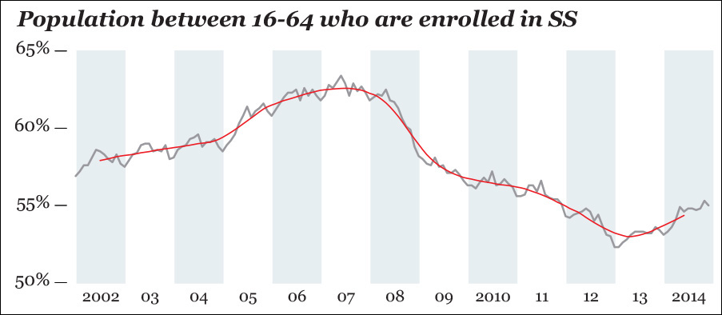
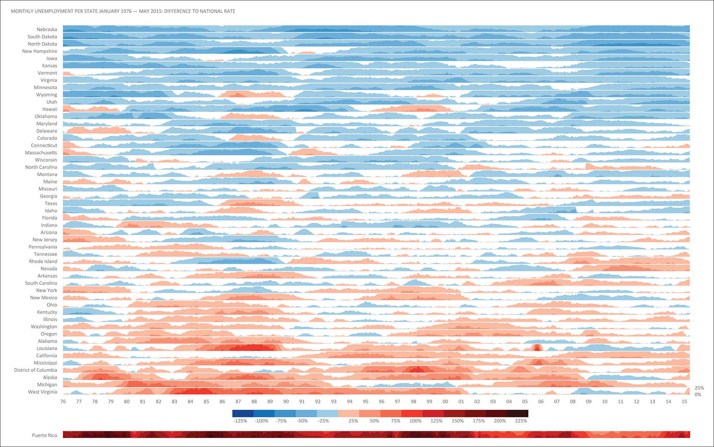
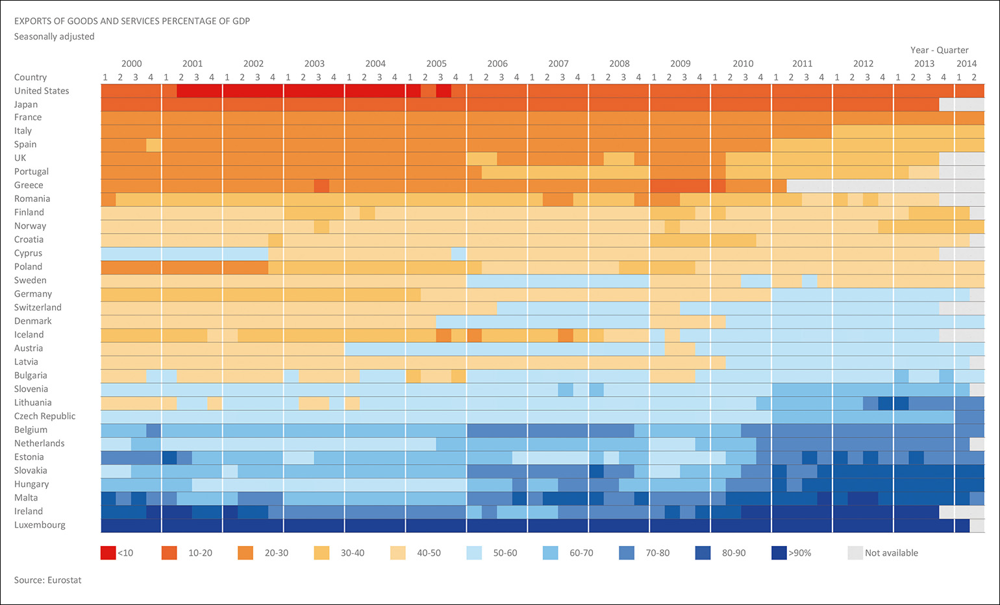

1. Time Series Line Chart
This is the most basic way to represent the data of change. The x-axis represents the timeline and the y-axis shows the values of the data. It should be created in consideration of the trend of and the seasonality of the data. The trend is whether the variables go up or down while the seasonality is the consistent and periodic fluctuations of the variables. Some form of the charts can be misleading. For instance, the chart talked about in the book about the unemployment rate is the good example of miscommunication through data visualization. It cropped part of the data and made it seem that there is a significant decrease in the unemployment, which did not exist. Also, the unemployment rate could fluctuate depending on the seasons. If the chart does not consider the fluctuations of the variables that shows up anyway whether or not the economy is looking up, then the chart can be misleading by illustrating the fluctuations as significant. To mitigate these problems, Cairo suggests using some of the statistics such as percentage change based on a certain index value, change rate from the previous period, and log scale. He signifies that no matter what means to present the data, it is important to present the undistorted data that illustrates the reality and present the data in an organized manner that is easy to interpret the data from.
EXAMPLE 1: Number of a certain population using the change rate from the previous year.
It incorporates the change rate and plot the data on the x-axis representing the time and y-axis representing the percentage to the whole population.

2. Horizontal chart
Horizontal chart is a type of chart to present the large amount of data of change using colors and timeline. It is based on the time series line chart with an index origin(from which the other variables are increasing or decreasing). It collapses a time series line chart and color based on whether the data is increasing on decreasing(or bigger/smaller etc), and present it in a smaller space. This is very effective especially when the data is large and we want to show it all to reveal the trend.
EXAMPLE 2: Monthly unemployment per state.
It is easy to see the increase and decrease of the variables and their intensity with a large amount of data.

3. Color timeline
Color timeline utilizes color to present data on a timeline. It is effective when you want to be precise but still reveal the trend. It can illustrate the change over time and provide the format to analyze the data for the viewer. The example below shows the exports of the goods and services percentage of GDP. It reveals the trend of change for each country as well as the contrast of the export ratio of goods and services between countries. It is also easy to intuitively understand the amount of numbers based on colors. Larger percentage
is represented in blue while lower one is in red. This saves the hassle to look at a numerical data table and analyze the trend from the data.
EXAMPLE 3: The exports of the goods and services percentage of GDP
It uses the colors effectively to reveal the trend.
